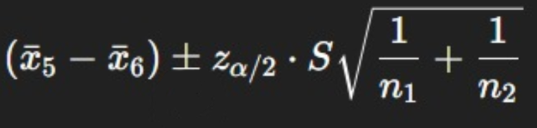
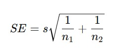
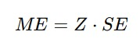

Promedio de cuarto, quinto y sexto año
| Cuarto año | Quinto año | Sexto año | |
|---|---|---|---|
| Promedio | P | P | P |
Enunciado ejercicio #1
Determine el intervalo de confianza al 98% para las diferencias de los promedios obtenidos en el nivel de quinto año y de sexto año, utilizar la desviación estándar muestral del promedio de cuarto, quinto y sexto.
Paso 1 - Definir los datos
- n = 165
- PENDIENTE
- PENDIENTE
- PENDIENTE
- Intervalo de confianza = 98%
- Cada cola posee un 1%
Paso 2 - Definir la fórmula de intervalo de confianza ha utilizar

Paso 3 - Diferencia entre las medias
x̅ Quinto año - x̅ Sexto año
Paso 4 - Calcular error estándar

Paso 5 - Margen de error

Para utilizar Z debe de ser calculada, para ello hacemos lo siguiente:
- Sumamos el 98% de IC con la cola izquierda -> 98% + 1% = 99%
- Luego, dividimos 99% entre 100 = 99 / 100 = 0.9900
- Por último, buscamos un número cercano a 0.9900 en la tablas de Z, siendo 2.33
Una vez hecho lo anterior, podemos aplicar la fórmula correctamente
Paso 4 - Definir nuestro resultado final
Resultado de las diferencias entre las medias +- Margen de Error